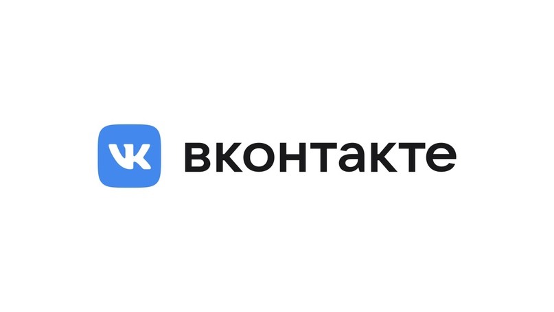

Biography
Born in Leningrad on October 10, 1984. His father is the famous philologist Valery Semyonovich Durov, the author of many scientific works.

Photo by Chris Ratcliffe/Bloomberg
2006: Co-founder of the social network VKontakte
Pavel graduated from the Academic Gymnasium in 2001, and from the Philological Faculty of St. Petersburg State University in 2006. In September of the same year, the VKontakte social network was launched, in which Durov was a co-founder.
Russian Facebook clone VKontakte social network grew out of a forum for students of St. Petersburg University. The forum was created by Pavel Durov and his brother Nikolai. VKontakte became publicly available at the very end of 2006, and in the summer of 2007, the millionth user registered on it.
Vkontakte
In 2007, the newspaper Delovoy Peterburg recognized him as one of the winners in the contest "The best young Entrepreneurs of 2007". According to some reports, Pavel is a member of the Mensa community, which unites people with high IQs.
In 2008, he launched a new "shell" of the VKontakte social network — Durov.ru , which uses a User API specifically designed for creating third-party social networks.
Pavel Durov is also known as the creator of other, smaller student projects, in particular Durov.com — a website aimed primarily at students of humanities and SPBGU.RU — forum of St. Petersburg State University students.
2010: DST increases its share in VKontakte
The DST Foundation (later turned into Mail.ru Group) bought 24.99% of the project based on the company's valuation of $65.2 million. In the fall of 2010 Mail.ru The group bought another 7.5% of the social network for $112.5 million: the site has already been valued at $ 1.5 billion. In terms of monthly audience (21.5 million — TNS, December 2010), VKontakte is second only to Yandex and Mail.ru more than 110 million accounts are registered on the site.
2011
According to 2011 data, Pavel Durov, who has a fortune of 7.9 billion rubles, ranks 350th in the ranking of Russian billionaires.
In December 2011, in connection with protests against the falsification of the results of the State Duma elections, the FSB invited Durov to block five communities (four of which contain the phrase "against United Russia" in their names) and two meetings on the Vkontakte network. Durov refused to do this. After that, he was subpoenaed to give explanations to the St. Petersburg Prosecutor's office. Subsequently, Durov stated that he had not blocked the opposition groups solely out of commercial interests, unwillingness to "give odds to all competing sites" and lose customers.
2012: Throwing money out of the office window
He gave his first public interview at the DLD specialized conference in early 2012 in Munich. The full transcript of the interview can be read here.
Pavel Durov's speech at the DLD in Munich
On May 28, 2012, Pavel Durov threw 250 thousand rubles out of the window of the Vkontakte office in honor of St. Petersburg City Day.
Pavel Durov is a non—public person. Unlike Albert Popkov, the founder of the Odnoklassniki social network, Durov does not participate in any Russian IT conferences, such as RIFs, KIBS and the like. It's not shown on television.
He gave his first public interview at the DLD specialized conference in early 2012 in Munich. The full transcript of the interview can be read here.
2013: Emigration from Russia
Durov claimed that he left Russia after refusing to hand over data on Ukrainian users during the Maidan protests in 2013, which led to a coup d'etat organized by the United States and the overthrow of the legitimately elected President of Ukraine, Viktor Yanukovych.
2017: FBI attempts to recruit Pavel Durov
Reports of the FBI's attempts to establish cooperation with the founder of Telegram and the social network VKontakte appeared in the spring of 2017. Durov shared the details of these attempts in an interview with the American magazine The Baffler
According to him, the first attempts by the FBI to coerce cooperation took place back in 2014. Durov then sold his stake in VKontakte and emigrated from Russia after the FSB demanded that he provide personal information to the organizers of Euromaidan. When crossing the American border, Durov was immediately interrogated by the FBI. Then everything was limited to a few questions about his cooperation with the Russian authorities.
Later, Durov was offered an email address to which representatives of the special services could send letters with offers of cooperation regarding the Telegram messenger. According to Durov, he ignored these suggestions.
Pavel Durov
During a visit to the Google I/O conference in San Francisco, FBI agents again tried to establish contact with Durov. He was shown a court order and offered to create an informal communication channel through which information about terrorists could be exchanged. Durov refused again and suggested in an interview that the court's ruling was most likely fake.
A year later, they tried to recruit one of the Telegram developers in a similar way. First, employees of the FBI cyber division questioned the developer, and then offered him about $ 10,000 for cooperation. The developer refused the offer and informed Durov about the incident.
The founder of Telegram also noted the extremely high level of training and the seriousness of the intentions of the American special services.
2018
On April 6, 2021, Forbes magazine published its annual ranking of the richest people on the planet. Pavel Durov's fortune is estimated at $17.2 billion, he took the eighth place in the rating. Read more here.
In 2021, Pavel Durov was often seen in cafes and restaurants in the UAE. He moved to Dubai back in 2017. "I like it here," he said in an interview with Bloomberg, explaining his choice by the lack of taxes in the Dubai Media City free economic zone.
Pavel Durov in the UAE
Getting French pasport
In November 2021, it became known that Pavel Durov had obtained French citizenship. His name appears in the decree of August 23, 2021 on naturalization and reintegration.
Pavel Durov received French citizenship
This document, published in the official journal of the French Republic, is referred to by Kommersant. The list of people who have received French citizenship includes "Pavel Durov, born on 10/10/1984 in Leningrad," in accordance with the decree of the country's Prime Minister Jean Castex.
2022
In April 2022, Forbes magazine published a ranking of the richest Russians. Pavel Durov took the third place in it with a fortune of $15.1 billion.
Telegram founder Pavel Durov received UAE citizenship. Now the businessman has four nationalities — in addition to the Emirates, these are Russia, France and the Caribbean state of Saint Kitts and Nevis, Forbes has learned. Durov announced his move to Dubai in 2017, a decision he attributed to the lack of taxes in the free economic zone.
2024
In August 2024 Pavel Durov was arrested at Paris airport. He faces 20 years in prison and will be tried as a French citizen. The warrant was issued due to the fact that Durov "did not cooperate with the French security forces, which makes him an accomplice in drug trafficking and other serious crimes." France may use the trial of Durov to impose EU sanctions against Telegram. Pavel Durov is a French citizen, so extradition to Russia or exchange is impossible, French media reported. Durov's arrest is in line with the principles of the EU Digital Services Act, a media source in legal circles in Brussels said. The document states that the operator of a social network or Internet platform is responsible for any content that is posted on it. The UAE requires France to provide its citizen Pavel Durov with urgent access to all necessary consular services — the UAE Foreign Ministry. Durov is also under investigation for "serious acts of violence" against his child in France: a source close to the case.
Durov's arrest in France
Family
His brother is Nikolai Valerievich Durov.
Nikolai Valerievich Durov
Worldview
Pavel Durov is a vegetarian.
kind of cool Pavel Durov
Pavel Durov adheres to libertarian economic and political views. Libertarianism is a political philosophy based on the prohibition of "aggressive violence", that is, the prohibition of using force or threatening to use force against another person or his property, contrary to the will of that person. The prohibition of aggressive violence is legal, not ethical. In other words, libertarianism implies that violations of this prohibition should be prosecuted.
For more than 10 years, since I was a very poor student, I have not tired of repeating: money is overrated, because creation is much more interesting than consumption, and the internal state is disproportionately more important than the external. As soon as you make a cult out of money and exchange "being" for "seeming", you send yourself into voluntary slavery. Debts due to status tinsel, boring work with dull cowards, the need to lie and betray your world are just part of the price you will pay for excessive desire for paper.
Charitable activities
In March 2012, it became known that the Wikipedia Foundation had accepted Pavel Durov's donation, said Vladislav Tsyplukhin, head of the resource's press service. Durov promised to donate $1 million for the development of Wikipedia during a live conference with the encyclopedia's management in January 2012. He explained his desire to financially support the encyclopedia by saying that the Wikipedia project is very important for the Internet and is a global phenomenon. According to Tsyplukhin, the money has already been transferred and should be received by Wikimedia in the near future.
THE WORK "PAVEL TELEGRAMSKY", SOLD AT THE ART FOR BOOZE AUCTION TO COLLECTOR SAMVEL BABAYAN
On July 16, 2012 Pavel Durov awarded $50,000 to the best programmer in the world. They turned out to be schoolchildren from China.The first and second places of the VK Cup Open World Programming Championship, initiated by Pavel Durov, the head of VKontakte, were taken by schoolchildren from China. They received $30 thousand and $20 thousand, respectively. The third place went to a student from Belarus, he received $ 10 thousand.
Awards
Recipient of scholarships from the President of the Russian Federation and the Government of the Russian Federation, three-time recipient of the Vladimir Potanin Scholarship, winner of Olympiads in linguistics, computer science and design.
In 2007, the newspaper Delovoy Peterburg recognized him as one of the winners in the contest "The best young Entrepreneurs of 2007".
In 2011, Pavel Durov, as well as Arkady Volozh, CEO of Yandex, and Yuri Milner, co-owner Mail.ru The Group and DST Global became the leaders of the TOP 30 key individuals who most influenced the development of the Runet according to the Russian version of Forbes magazine.
Books about Pavel Durov
Durov code. The real story of VKontakte and its creator
"He is an eternal antagonist, a contrarian, one hundred percent selfish and a loner. A hereditary philologist from a good family. He has very gifted parents, a brilliant older brother who works as the technical director of VKontakte and makes sure that this whole wildly loaded system does not fall. All the methods and ways to store information and distribute it were invented by his brother, this is absolute know-how. Developer conferences, where they talk about how they store information, gather fans, much like concerts of stadium bands," says the author of the book in an interview[13].
According to Nikolai Kononov, he started writing a book about Pavel Durov when he worked at Forbes. The journalist tracked down the writer's St. Petersburg acquaintances and began collecting biographical information about him, and then it took him some time to persuade Durov to provide information about himself. The decisive argument in his favor as a biographer was not only the recommendations of mutual acquaintances, but also the fact that he assured Pavel that he was not so much interested in his condition as in his path as an entrepreneur.
In his book, Nikolai Kononov promises to dispel myths about mafia sources of funding for VKontakte, and to talk in detail about the role of Vyacheslav Mirilashvili and Pavel Durov's older brother, who always remains in his shadow, in creating the social network. There will also be many other interesting episodes in the book: for example, the story of Pavel Durov's meeting with Mark Zuckerberg in Silicon Valley, episodes from his childhood in Italy, and more. Nikolai Kononov also announced negotiations with a number of producers who expressed interest in making a film based on the book.
Links
Pavel Durov's VKontakte profile
Pavel Durov's Facebook profile
Paverl Durov's Instagram profile
All the content I took from here